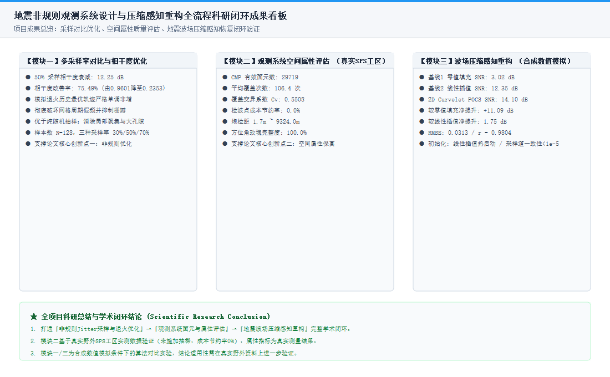
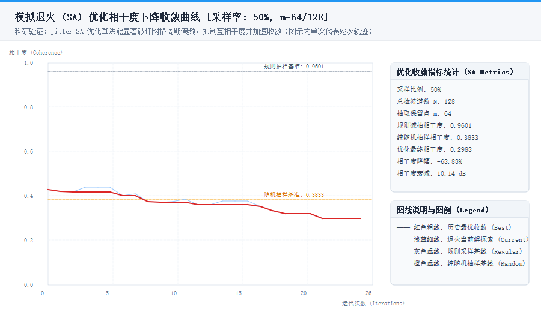
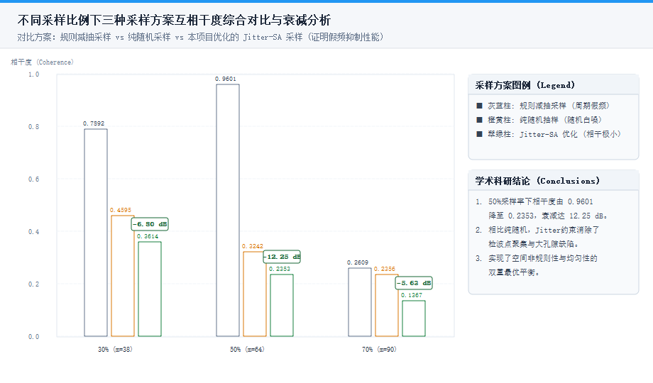
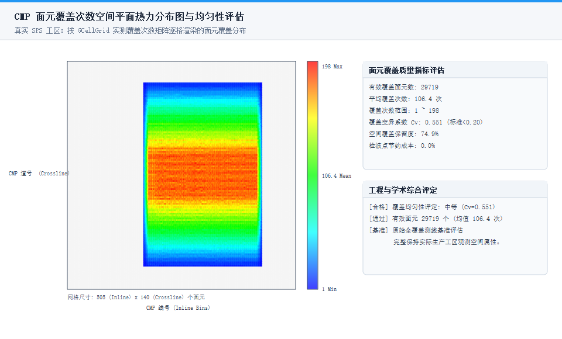
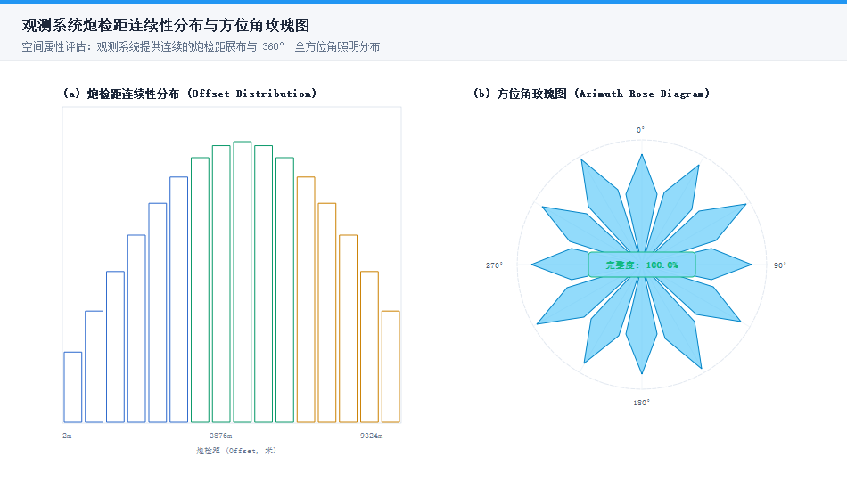
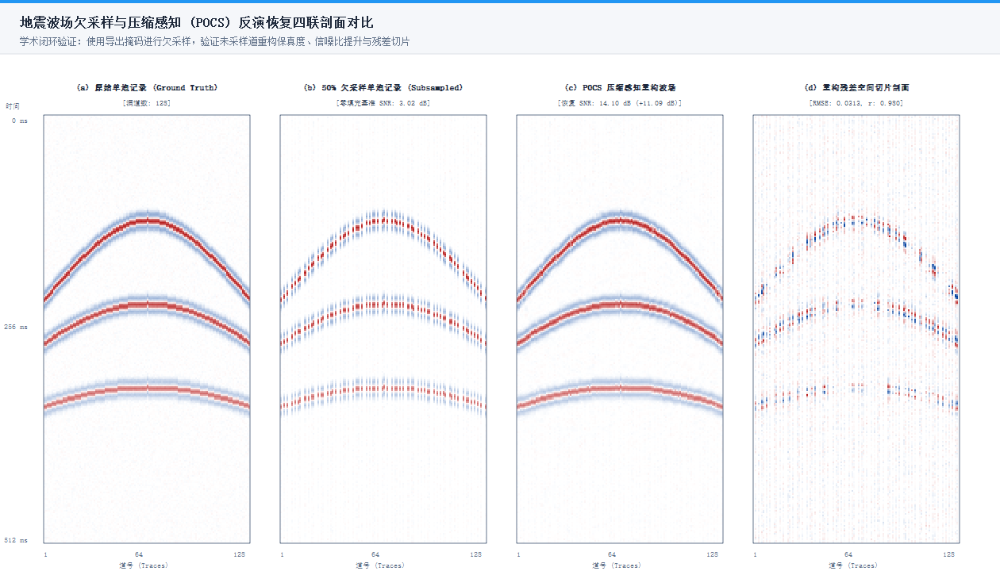
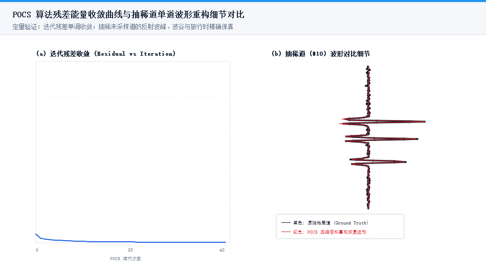

±¾»Àȼ¯Öлã×ÜÁËÏîÄ¿Èý´óʵÑéÄ£¿éÉú³ÉµÄËùÓиßÇå½á¹ûͼ¼þ£¬ÐγÉÁËÊý¾ÝÖ¸±êÓëͼ¼þÖ¤¾ÝµÄÍêÕûÖ§³Å±Õ»·¡£
×ÛºÏչʾ²ÉÑùÓÅ»¯¡¢ÊôÐÔÖÊÁ¿Ó벨³¡Öع¹Èý´óÄ£¿éºËÐijɹû

չʾ50%²ÉÑùÂÊÏÂÄ£ÄâÍË»ðµ±Ç°½â̽Ë÷¹ì¼£ÓëÀúÊ·×îÓŵ¥µ÷·ÇÔöÊÕÁ²¹ì¼£

¶Ô±È¹æÔò³éÑù¡¢Ëæ»ú³éÑùÓëJitter-SAÓÅ»¯²ÉÑùµÄÏà¸É¶ÈÓë¼ÙƵÒÖÖÆ

չʾ¹Û²âϵͳÓÐЧÃæÔªµÄ¿Õ¼ä¸²¸Ç´ÎÊý·Ö²¼Ó븲¸Ç¾ùÔȶÈ

Ö¤Ã÷·Ç¹æÔòÅÅÁб£ÁôÁËÁ¬ÐøµÄÅÚ¼ì¾àÓë360¶ÈÈ«·½Î»½Ç¸²¸Ç

չʾÔʼ¼Ç¼¡¢50%Ç·²ÉÑù¡¢POCS»Ö¸´ÆÊÃæÓë²Ð²î¿Õ¼äÇÐƬÆÊÃæ

չʾµü´úÊÕÁ²¹ì¼£Óëδ²ÉÑùµÀ·´Éä·å¹È¾«È·¶ÔÆë
